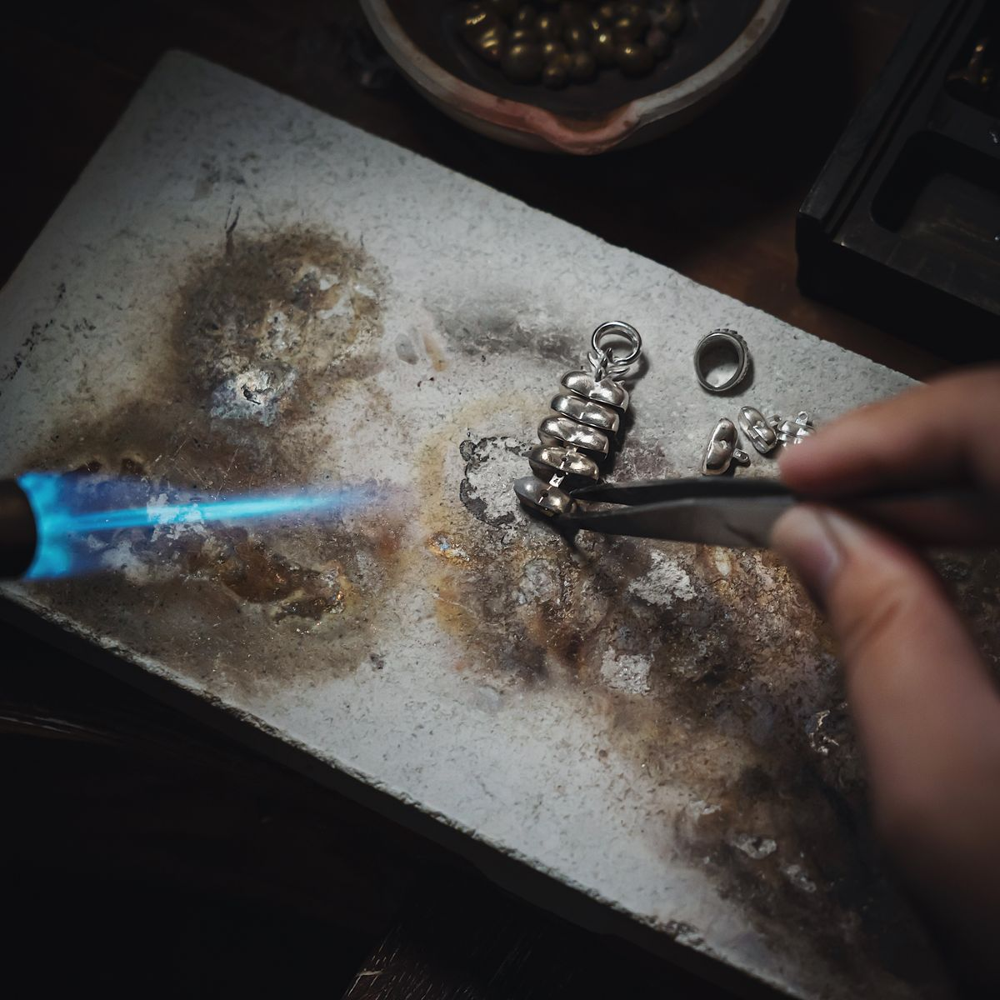
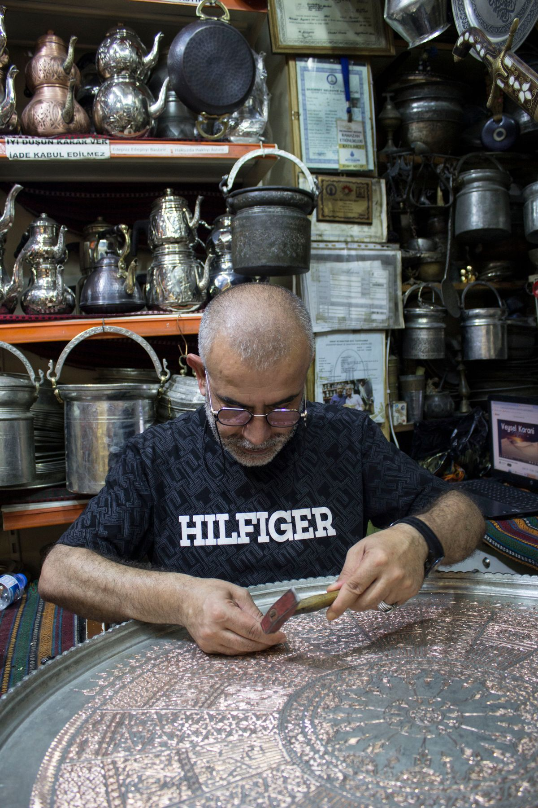

Room 3 · The bench
About the maker
I learned silver the slow way: three years sweeping a workshop floor in the Old City before I was trusted with a raising hammer, then a decade of repairs — other makers' work, other centuries' work — before I sold a piece with my own mark on it. Repairs teach you what use does to silver. Everything I make is designed by someone who has mended a hundred broken feet and split seams.
How the silver is made
Most pieces begin as a flat sheet of sterling. A cup is hand-raised: hammered over stakes in courses, annealed between them, until the sheet stands up into a bowl that rings when you tap it. Engraving comes last and quietest — names, dates, a band of vine — cut with a graver, never etched by machine, so the line has a beginning and an end like handwriting.
How the cloth is made
Covers are cotton-linen, dyed the deep blue the studio is named for, with the border built in appliqué first and embroidery over it. A cover takes four weeks because the border is stitched by hand and hands have a speed. It is lined, it washes by hand, and it is made to be folded every Friday for fifty years.
Sterling, plate, and honest labels
This studio works in sterling silver — 925 parts in a thousand — and every label says so. Silverplate is a fine material with a dishonest reputation only because sellers hide it. When a client brings plate for repair I say what it is, what a repair can and cannot do, and what it costs, before any work starts. If you buy silver anywhere, ask two questions: is it sterling, and who made it. A seller who answers both is a seller you can use.


Caring for silver that is used
- Wash by hand in warm water with a drop of mild soap; dry at once with a soft cloth.
- Never the dishwasher. The heat and detergent grey the surface and loosen feet.
- Tarnish is not damage — it is silver breathing. A polishing cloth, two minutes, done.
- Store dry, wrapped in the cloth the piece arrived in, away from rubber bands and newspaper.
- Wine, wax and fingerprints wash off. Dents come to the bench; the first small repair on any piece I made is free, for the life of the piece.
Museum shops and wholesale
Shops buy at wholesale and take their standard margin; the retail price is the price printed here, so a customer can check the shop against the studio and find the same number. Ranges are made in small batches, one pattern per range, and a shop that wants its name engraved is told — politely — that the maker's mark is the only name the bench cuts into stock pieces.
The calendar runs the studio
The bench takes a fixed number of commissions per season, and the festivals spend them in a fixed order. High Holiday covers are ordered by summer. Hanukkah pieces close in autumn. Passover is the spring rush, and it is why the planner on the gallery page exists: it will tell you a date is impossible before you have your heart set on it, and it will always offer what the shelf can do instead.
Questions I do not answer
Whether a piece is fit for ritual use, what an inscription should say, how a synagogue should furnish its ark — these are questions for your rabbi, and I will happily work to their answer. A maker who rules on law as a sales technique is selling two things and standing behind neither.